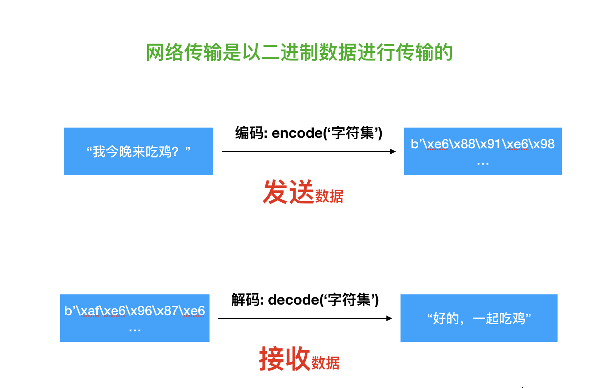

<!DOCTYPE lake>
<h2 data-lake-id="SRPD4" id="SRPD4"><span data-lake-id="u306edd2d" id="u306edd2d" style="color: rgba(0, 0, 0, 0.87)">网络通信传递的数据格式</span></h2><p data-lake-id="u5794408f" id="u5794408f"><span data-lake-id="u8000abb8" id="u8000abb8" style="color: rgba(0, 0, 0, 0.87)">网络传输是以</span><strong><span data-lake-id="ue8f1361a" id="ue8f1361a" style="color: rgba(0, 0, 0, 0.87)">二进制数据</span></strong><span data-lake-id="u873adfe4" id="u873adfe4" style="color: rgba(0, 0, 0, 0.87)">进行传输的。</span></p><p data-lake-id="ue9086159" id="ue9086159"><span data-lake-id="u0a7d9d06" id="u0a7d9d06" style="color: rgba(0, 0, 0, 0.87)">在网络传输数据时，数据需要先编码转为</span><strong><span data-lake-id="udcc85b54" id="udcc85b54" style="color: rgba(0, 0, 0, 0.87)">二进制（bytes）</span></strong><span data-lake-id="u15ad318f" id="u15ad318f" style="color: rgba(0, 0, 0, 0.87)">数据类型。</span></p><p data-lake-id="ua262046f" id="ua262046f"><span data-lake-id="u876b5959" id="u876b5959" style="color: rgba(0, 0, 0, 0.87)">所以，发送端需要把</span><strong><span data-lake-id="ud96b9e56" id="ud96b9e56" style="color: rgba(0, 0, 0, 0.87)">字符串</span></strong><span data-lake-id="u96e66c45" id="u96e66c45" style="color: rgba(0, 0, 0, 0.87)">类型数据转换为</span><code data-lake-id="uc704ba28" id="uc704ba28"><span data-lake-id="u44ac09d5" id="u44ac09d5" style="color: rgba(0, 0, 0, 0.87)">bytes</span></code><span data-lake-id="u3bd0465b" id="u3bd0465b" style="color: rgba(0, 0, 0, 0.87)">类型数据；接收端收到数据之后，需要把</span><code data-lake-id="uf8e39765" id="uf8e39765"><span data-lake-id="ue8a58418" id="ue8a58418" style="color: rgba(0, 0, 0, 0.87)">bytes</span></code><span data-lake-id="ud1279ac5" id="ud1279ac5" style="color: rgba(0, 0, 0, 0.87)">类型再转换为</span><strong><span data-lake-id="u812bf40c" id="u812bf40c" style="color: rgba(0, 0, 0, 0.87)">字符串</span></strong><span data-lake-id="u3359b0ef" id="u3359b0ef" style="color: rgba(0, 0, 0, 0.87)">类型使用。</span></p><p data-lake-id="u9e564e08" id="u9e564e08"></p><h2 data-lake-id="wqGQX" id="wqGQX"><span data-lake-id="u80ddd684" id="u80ddd684" style="color: rgba(0, 0, 0, 0.87)">数据转换</span></h2><p data-lake-id="u4ebfd01c" id="u4ebfd01c"><strong><span data-lake-id="ufd660b1e" id="ufd660b1e" style="color: rgba(0, 0, 0, 0.87)">字符串</span></strong><span data-lake-id="uc5b075d9" id="uc5b075d9" style="color: rgba(0, 0, 0, 0.87)">和</span><code data-lake-id="u838898c9" id="u838898c9"><span data-lake-id="u684fa2c2" id="u684fa2c2" style="color: rgba(0, 0, 0, 0.87)">bytes</span></code><span data-lake-id="uaace7494" id="uaace7494" style="color: rgba(0, 0, 0, 0.87)">之间的转换方法如下:</span></p><table class="lake-table" data-lake-id="OBKZU" id="OBKZU" style="width: 750px"><colgroup><col width="375"/><col width="375"/></colgroup><tbody><tr data-lake-id="u7624c91b" id="u7624c91b"><td data-lake-id="u45834be2" id="u45834be2"><p data-lake-id="u055771ea" id="u055771ea" style="text-align: center"><strong><span data-lake-id="u184b4113" id="u184b4113" style="color: rgba(0, 0, 0, 0.87)">函数名</span></strong></p></td><td data-lake-id="u6c13edc8" id="u6c13edc8"><p data-lake-id="u154a2466" id="u154a2466" style="text-align: center"><strong><span data-lake-id="u1e297dff" id="u1e297dff" style="color: rgba(0, 0, 0, 0.87)">说明</span></strong></p></td></tr><tr data-lake-id="ue976f670" id="ue976f670"><td data-lake-id="uc3854b7f" id="uc3854b7f"><p data-lake-id="u6765d03b" id="u6765d03b" style="text-align: center"><code data-lake-id="u001108e3" id="u001108e3"><span data-lake-id="u90866fec" id="u90866fec" style="color: rgba(0, 0, 0, 0.87)">str.encode()</span></code></p></td><td data-lake-id="u3a77e3d7" id="u3a77e3d7"><p data-lake-id="u514f48d1" id="u514f48d1" style="text-align: center"><strong><span data-lake-id="uc06e241f" id="uc06e241f" style="color: rgba(0, 0, 0, 0.87)">编码</span></strong><span data-lake-id="u89ad4a6c" id="u89ad4a6c" style="color: rgba(0, 0, 0, 0.87)">：将字符串转化为字节码</span></p></td></tr><tr data-lake-id="u9bf07ba3" id="u9bf07ba3"><td data-lake-id="u80bc8f41" id="u80bc8f41"><p data-lake-id="u8aaf7da1" id="u8aaf7da1" style="text-align: center"><code data-lake-id="u25df0463" id="u25df0463"><span data-lake-id="u86fbddbf" id="u86fbddbf" style="color: rgba(0, 0, 0, 0.87)">bytes.decode()</span></code></p></td><td data-lake-id="ua981a8b1" id="ua981a8b1"><p data-lake-id="u2fb254a6" id="u2fb254a6" style="text-align: center"><strong><span data-lake-id="uaa5e19b3" id="uaa5e19b3" style="color: rgba(0, 0, 0, 0.87)">解码</span></strong><span data-lake-id="u225fffb9" id="u225fffb9" style="color: rgba(0, 0, 0, 0.87)">：将字节码转化为字符串</span></p></td></tr></tbody></table><p data-lake-id="ue90b06c5" id="ue90b06c5"><span data-lake-id="u688e244c" id="u688e244c">字符串的编解码示例</span></p><span class="yuque-card-unsupported">[codeblock]</span><p data-lake-id="u2bf7b7d2" id="u2bf7b7d2"><br/></p>